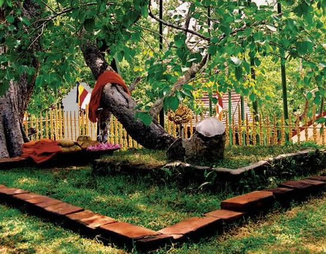
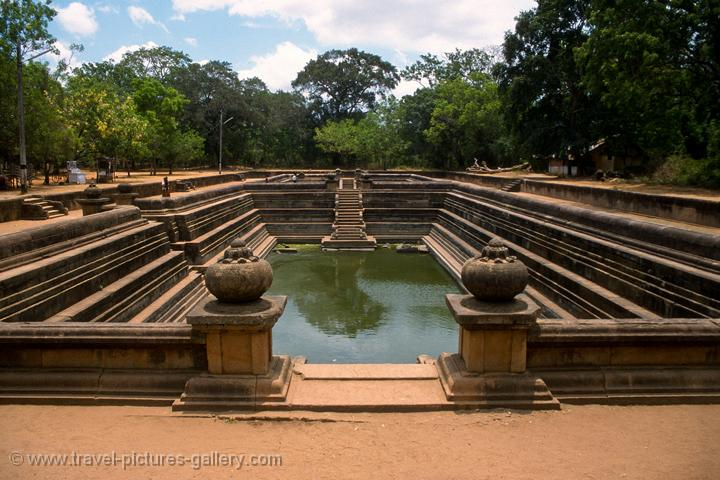

Anuradapura
Abhayagiriya
This was the first place we visited in Anuradhapura and what a way to start. Abhayagiri Dagoba dates back to the 1st century BC and was part of a 5,000 strong monastery. Originally it was over 100m high making it one of the highest structures of the ancient world. Only the Pyramids of Giza in Egypt were higher. The name Abhayagiri means ‘Hill of Protection’ or ‘Fearless Hill’.
Jaya Sri Maha Bodhi
Jaya Sri Maha Bodhi (Sinhala: ජය ශ්රී මහා බොධිය) is a sacred fig tree in the Mahamewna Gardens, Anuradhapura, Sri Lanka. It is said to be the southern branch from the historical Sri Maha Bodhi at Buddha Gaya in India under which Lord Buddha attained Enlightenment. It was planted in 288 BC,[1][2][3] and is the oldest living human-planted tree in the world with a known planting date.[4] Today it is one of the most sacred relics of the Buddhists in Sri Lanka and respected by Buddhists all over the world. The other fig trees that surround the sacred tree protect it from storms and animals such as monkeys, bats, etc.[citation needed] In April 2014, the government banned all construction within 500 meters of the tree. Only construction that obviously will not harm the tree will be allowed
Ruwanweli Stupa
Ruwanweliseya Stupa (Ruwanveli Seya Stupa), the foremost of the supremely glorious ancient living monuments of Sinhalese Buddhist Heritage at the city of Anuradhapura (a UNESCO World Heritage Site-Culture) was built by King Dutugamunu (161-137 BC), the Hero of the Nation, who hailed from Ruhuna, which was destined to give birth to most of the glorious heroes of the island nation of Sri Lanka from the ancient era to the modern day. Ruwanweliseya Stupa (Ruwanveli Seya Stupa) also called Maha Stupa (Sinhala: the great dagoba) or Ratnapali Stupa or Swarnamali stupa has been the most adored, most venerated among the great ancient stupas (dagobas) of Sri Lanka. Anuradhapura is replete with the ancient cultural monuments located in between the River Malwatu Oya and two great ancient man-made irrigation reservoirs called Tissa Wewa and Abhaya Wewa (Basawakkulama Wewa). These two ancient irrigation reservoirs, together with ancient Nuwara Wewa reservoir on the eastern flank of the River Malwatu Oya, extend the lifeline to the agricultural district of Anuradhapura. The three main ancient stupas clustered south of the ruined Southern wall of Anuradhapura, namely Ruwanweliseya Stupa, Mirisavatiya Dagaba and Jetavana Stupa perfectly align with the celestial layout of Rigel, Mintaka and Bellatrix, three of the seven stars of the Orion constellation, which was associated with Osiris, the sun-god of rebirth and afterlife, by the ancient Egyptians (3150 BC-conventional Egyptian chronology). And Anuradapura of Sri Lanka (SL Low gravity anomaly: -104m geoid), though far south of Bodh Gaya of Northern India, is only three and a half degrees west of it. Bodh Gaya, the location where Gauthama Buddha attained Supreme enlightenment, is considered Patavi Nahbi (Sanskrit: naval of the Earth), according to the Buddhist cosmology. Bodh Gaya’s antipode, on the other side of the world, that can be connected by an axis running through the very centre of the Earth, is the Temple of the Sun (referred to as the naval of the universe) of the Mayans (3114 BC Mesoamerican Long Count calendar) at the UNESCO World Heritage Site of Cuzco (Quechua, the Inca language: the navel of the universe) nearby Machu Picchu, the lost city of the Mayans. Added to the inexplicable cosmological and geographical mysteries associated with Ruwanweliseya Stupa (Ruwanveli Seya Stupa), is the fact that locations for the construction of Ruwanweliseya and Mirisavatiya were determined by a couple of extraordinary circumstances. Still more astonishing is the sudden yet timely surfacing of precious metals and jewels at the beginning of the construction of Ruwanweliseya Stupa.
Kuttam Pokuna
Kuttam Pokuna or the twin ponds are another hydrologic engineering marvels of the ancient Sri Lanka. These two ponds belong to the Abayagiri aramic complex and probably been used by the monks for bathing. The origins of these ponds are not known but it is thought to have been built during the reign of King Aggabodhi I (575-608). The smaller pond (the northern) one has been constructed first and the larger one at a later stage. They are connected through a pipeline at the bottom. The northern pond is 91 feet (28 meters) long and the other 132 feet (40 meters) . Water to these ponds have been supplied through underground pipelines and the water is sent through several filtering chambers before it falls on the northern pond through a mouth of a dragon. The water from both ponds is drained from a small outlet in the smaller northern pond. Though the underground pipelines are no more, you can see 4 levels of filtering of the water before it enters the ponds.
Samadhi Statue

Samadhi Statue is considered one of the best sculptures in the Anuradhapura era. It is thought to be done during the 3rd or the 4th century. It is made out of dolomite marble and stands 7 feet 3 inches (2.21 metres) in height. This statue was found in the present location in 1886 fallen to the ground with damages to the nose. It was then erected and the nose was reconstructed. In 1914, it was found damaged by treasure hunters and re constructed again. The statue’s eyes are hollow indicating they were impressed with crystal or precious stones. It is unclear whether this and the 2nd statue were brought from another vihara or they were originally kept here. It is said that when you look at the face of the statue from three sides they show 3 different features. Looking at the profile of the face from left and right they show a slight sadness and a slightly smiling face on the other. Looking from the front, the face shows neutral features. Today this stature is covered by concrete structure which has somewhat destroyed the beauty of this statue. Even the reconstruction of the nose has not been a success which looks very artificial. Next to the Samadhi statue is an ruins of an image house which is called Bodhisattva Image House. According to Maha Vamsa, the great chronicle of Sri Lanka, it is said that the King Dhatusena (459-477) has built an image house for the Maithree Bodhisattva left to the Abhayagiriya Bodhi Tree Shrine and had decorated with royal garments. It is believed these remains are the image house built by king Dhatusena. An limestone Bodhisattva image has been found buried in the rubble which has been dated to the 5th century.